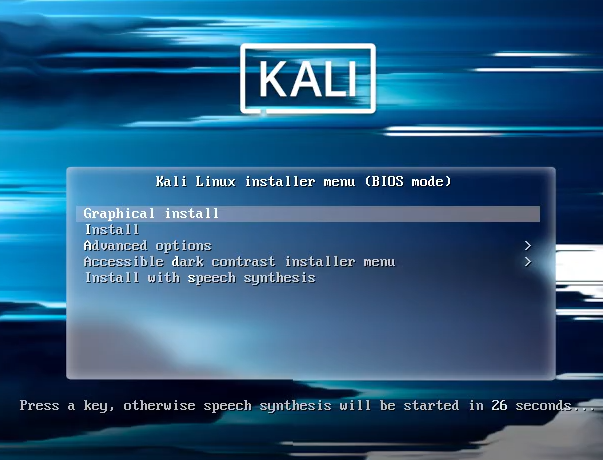
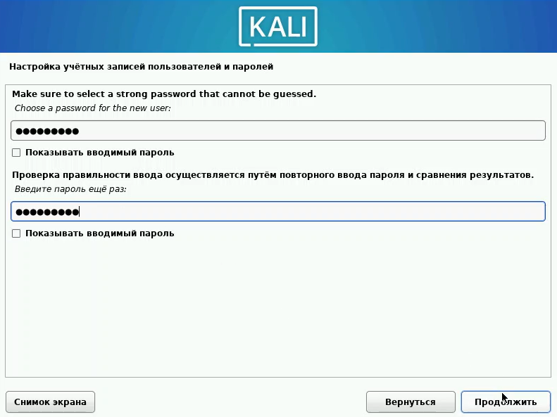
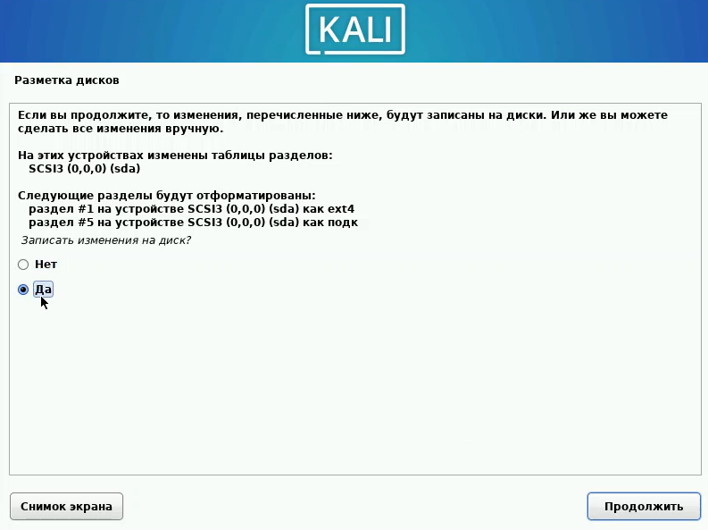

Презентация по первому этапу индивидуального проекта
Информационная безопасность
Арбатова В. П.
05 марта 2025
Цель работы
Приобретение практических навыков по установке операционной системы Linux на виртуальную машину.
Задание
Установить дистрибутив Kali Linux на виртуальную машину VirtualBox.
Теоретическое введение
Kali Linux — это дистрибутив Linux на основе Debian с открытым исходным кодом, предназначенный для расширенного тестирования на проникновение, проверки уязвимостей, аудита безопасности систем и сетей.
Сферы применения дистрибутива:
Тестирование на проникновение. Kali Linux широко используется в области тестирования безопасности, чтобы оценить уязвимости в компьютерных системах, сетях и приложениях. ОС предоставляет множество инструментов для обнаружения уязвимостей.
Цифровое расследование. Дистрибутив предоставляет инструменты для сбора и анализа цифровых данных, включая восстановление удаленных файлов, извлечение метаданных, анализ системных журналов и т.д.
Обратная разработка. Kali Linux содержит инструменты, которые помогают разработчикам анализировать готовое программное обеспечение, чтобы понять его работу, выявить уязвимости или разработать альтернативные реализации.
Безопасность беспроводных сетей. У ОС есть набор инструментов для проверки и обеспечения безопасности беспроводных сетей. Kali Linux поддерживает анализ беспроводных протоколов, перехват и дешифрование сетевого трафика, а также атаки на беспроводные сети.
Защита информации. Kali Linux также может использоваться для обеспечения безопасности информации, включая мониторинг сетевой активности, обнаружение вторжений, защиту от DDoS-атак и настройку брандмауэров.
Выполнение лабораторной работы
Начиню создание. Называю машину, устанавливаю тип, подтип и версию
Начало создания
Выделю 4096 Мб основной памяти и 3 процессора
Память и процессоры
Создаю новый виртуальный диск на 40 Гб
Виртуальный диск
В настройках захожу в носители, в контроллеры добавляю установленный с официального сайта образ диска
Контроллер
Запускаю машину
Запуск машины
Выбираю графическую установку
Графическая установка
Выбираю русский язык
Язык
Вбиваю имя этого компьютера, согласно соглашению об именовании
Имя компьютера
Ввожу так же имя домена
Имя домена
Ввожу имя пользователя
Имя пользователя
Следующее имя учётной записи задается автоматически
Имя учётной записи
Задаю пароль
Пароль
Выбираю время
Выбор времени
Выбираю использовать весь диск, чтобы всё прошло автоматически
Разметка диска
Выбора нет, выбираю единственный предложенный
Разметка диска
Читаю, что написано и выполняю инструкцию
Разметка дисков
Заканчиваю разметку и записываю изменения на диск
Разметка дисков
Выбираю да. Если выбрать нет, машина не запустится
Разметка дисков
Ничего не меняю, всё правильно
Выбор ПО
Выбираю автоматический вариант
Системный загрузчик
Установка завершена. Нажимаю продолжить
Завершение установки
Готова виртуальная машина
Готово!
Выводы
Приобрела практические навыки по установке операционной системы Linux на виртуальную машину. Установила дистрибутив Kali LInux на VirtualBox.